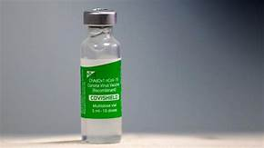
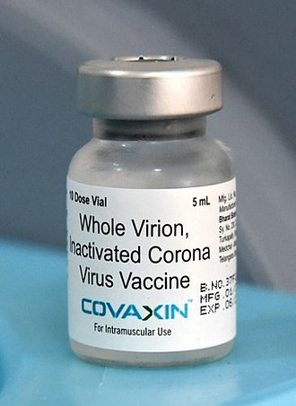

A COVID‑19 vaccine is a vaccine intended to provide acquired immunity against severe acute respiratory syndrome coronavirus 2 (SARS‑CoV‑2), the virus that causes coronavirus disease 2019 (COVID‑19).
Know more about vaccines in IndiaCovishield vaccine has been developed by the University of Oxford and British-Swedish pharmaceutical company AstraZeneca.
Adar Poonawalla, Chief Executive Officer, Serum Institute of India (SII) -- which is British-Swedish pharma giant AstraZeneca's manufacturing partner - said that the vaccine would be 90 to 95 per cent effective if the two shots are parted by around 2-3 months.
The duration between two doses is 84 days
In February 2020, the Jenner Institute agreed a collaboration with the Italian company Advent Srl for the production of a batch of 1,000 doses of a vaccine candidate for clinical trials. Originally, Oxford intended to donate the rights to manufacture and market the vaccine to any drugmaker who wanted to do so, but after the Gates Foundation urged Oxford to find a large company partner to get its COVID-19 vaccine to market, the university backed off of this offer in May 2020. The UK government then encouraged Oxford to work with AstraZeneca, a company based in Europe, instead of Merck & Co., a US-based company (The Guardian reported the initial partner was the German-based Merck Group instead). Government ministers also had concerns that a vaccine manufactured in the US would not be available in the UK, according to anonymous sources in The Wall Street Journal. Financial considerations at Oxford and spin-out companies may have also played a part in the decision to partner with AstraZeneca.
Covaxin (codenamed as BBV152) is an inactivated virus-based COVID-19 vaccine developed by Bharat Biotech in collaboration with the Indian Council of Medical Research.In July 2021, Bharat Biotech reported the vaccine to be 64% (95% CI, 29–82%) effective against asymptomatic cases, 78% (65–86%) effective against symptomatic cases, 93% (57–100%) effective against severe COVID-19 infection, and 65% (33–83%) effective against the Delta variant.
The duration between two doses is 28 days
As an inactivated vaccine, Covaxin uses a more traditional technology that is similar to the inactivated polio vaccine. Initially, a sample of SARS-CoV-2 was isolated by India's National Institute of Virology and used to grow large quantities of the virus using vero cells. From then on, the viruses are soaked in beta-propiolactone, which deactivates them by binding to their genes, while leaving other viral particles intact. The resulting inactivated viruses are then mixed with the aluminium-based adjuvant Alhydroxiquim-II